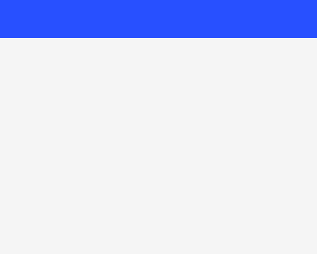

position — 83.33% all categories ↑
FAIL 15.00% positioning-fixed-repeats-pages · fixed-repeats-paged-media · REALColorValueΔE 43.8
page 1

page 2


diff colours:MissingExtraColorErrGeomShiftAA edgeMatchAA / edge-jitter = cross-rasterizer measurement ceiling, not a bug.
why: fill recolour ΔRGB(+220,+103,+184) (ΔE 43.8)
position:fixed header repeats at the top of each printed page; catches treating fixed as a one-page absolute box.
regions (1)
| class | bbox (CSS px) | area% | magnitude | reason |
|---|---|---|---|---|
| ColorValue | 0,0 → 200,24 | 15.00 | ΔE 43.8 ΔRGB(220,103,184) | fill recolour ΔRGB(+220,+103,+184) (ΔE 43.8) |
source · cases/positioning/positioning-fixed-repeats-pages.html
1<!DOCTYPE html>
2<html lang="en">
3<head>
4<meta charset="utf-8">
5<style>
6 @page { size: 200px 160px; margin: 0; }
7 html { font-family: ParitySans; line-height: 1.5; }
8 * { margin: 0; box-sizing: border-box; }
9 html, body { background: #ffffff; }
10 .header {
11 position: fixed;
12 left: 0;
13 top: 0;
14 width: 200px;
15 height: 24px;
16 background: #0a7f2e;
17 z-index: 10;
18 }
19 .page {
20 width: 200px;
21 height: 160px;
22 }
23 .one { background: #e6e6e6; }
24 .two { background: #c62828; }
25</style>
26</head>
27<body>
28 <div class="header"></div>
29 <div class="page one"></div>
30 <div class="page two"></div>
31</body>
32</html>
PASS 0.00% positioning-fixed-top-left · fixedAaOnly


diff colours:MissingExtraColorErrGeomShiftAA edgeMatchAA / edge-jitter = cross-rasterizer measurement ceiling, not a bug.
why: differences confined to glyph AA edges — measurement ceiling, not a bug
position:fixed box placed by top/left relative to the page box on a single non-scrolling page.
source · cases/positioning/positioning-fixed-top-left.html
1<!DOCTYPE html>
2<html>
3<head>
4<meta charset="utf-8">
5<style>
6 @page { size: 318px 161px; margin: 0; }
7 html { font-family: ParitySans; line-height: 1.5; }
8 * { margin: 0; box-sizing: border-box; }
9 body { background: #ffffff; }
10 /* fixed box is positioned relative to the page (viewport); on a single
11 non-scrolling page it sits at the given top/left offset from the page box */
12 .box {
13 position: fixed;
14 top: 40px;
15 left: 40px;
16 width: 120px;
17 height: 80px;
18 background: #c0392b;
19 border: 2px solid #6e2018;
20 }
21 .filler {
22 margin: 20px;
23 width: 200px;
24 height: 120px;
25 background: #f0e6e4;
26 border: 2px solid #c9a39d;
27 }
28</style>
29</head>
30<body>
31 <div class="filler"></div>
32 <div class="box"></div>
33</body>
34</html>
PASS 0.00% positioning-position-absolute-bottom-right · absolute-bottom-rightAaOnly


diff colours:MissingExtraColorErrGeomShiftAA edgeMatchAA / edge-jitter = cross-rasterizer measurement ceiling, not a bug.
why: differences confined to glyph AA edges — measurement ceiling, not a bug
position:absolute box anchored to bottom/right edges of its containing block.
source · cases/positioning/positioning-position-absolute-bottom-right.html
1<!DOCTYPE html>
2<html>
3<head>
4<meta charset="utf-8">
5<style>
6 @page { size: 358px 241px; margin: 0; }
7 html { font-family: ParitySans; line-height: 1.5; }
8 * { margin: 0; box-sizing: border-box; }
9 body { background: #ffffff; }
10 .wrap { padding: 20px; }
11 /* absolute box anchored to bottom/right edges of its containing block */
12 .cb {
13 position: relative;
14 width: 240px;
15 height: 200px;
16 background: #f4eef4;
17 border: 2px solid #bf94bf;
18 }
19 .box {
20 position: absolute;
21 bottom: 40px;
22 right: 50px;
23 width: 100px;
24 height: 70px;
25 background: #8e44ad;
26 border: 2px solid #4a2259;
27 }
28</style>
29</head>
30<body>
31 <div class="wrap">
32 <div class="cb">
33 <div class="box"></div>
34 </div>
35 </div>
36</body>
37</html>
PASS 0.00% positioning-position-absolute-top-left · absoluteAaOnly


diff colours:MissingExtraColorErrGeomShiftAA edgeMatchAA / edge-jitter = cross-rasterizer measurement ceiling, not a bug.
why: differences confined to glyph AA edges — measurement ceiling, not a bug
position:absolute box placed by top/left within a relative containing block.
source · cases/positioning/positioning-position-absolute-top-left.html
1<!DOCTYPE html>
2<html>
3<head>
4<meta charset="utf-8">
5<style>
6 @page { size: 358px 241px; margin: 0; }
7 html { font-family: ParitySans; line-height: 1.5; }
8 * { margin: 0; box-sizing: border-box; }
9 body { background: #ffffff; }
10 .wrap { padding: 20px; }
11 /* absolute box positioned by top/left relative to its positioned ancestor */
12 .cb {
13 position: relative;
14 width: 240px;
15 height: 200px;
16 background: #eef4ec;
17 border: 2px solid #9bbf94;
18 }
19 .box {
20 position: absolute;
21 top: 50px;
22 left: 60px;
23 width: 110px;
24 height: 80px;
25 background: #1e824c;
26 border: 2px solid #0d3f24;
27 }
28</style>
29</head>
30<body>
31 <div class="wrap">
32 <div class="cb">
33 <div class="box"></div>
34 </div>
35 </div>
36</body>
37</html>
PASS 0.00% positioning-position-relative-offset · relativeAaOnly


diff colours:MissingExtraColorErrGeomShiftAA edgeMatchAA / edge-jitter = cross-rasterizer measurement ceiling, not a bug.
why: differences confined to glyph AA edges — measurement ceiling, not a bug
position:relative shifts the box by top/left from its in-flow position; flow space is preserved.
source · cases/positioning/positioning-position-relative-offset.html
1<!DOCTYPE html>
2<html>
3<head>
4<meta charset="utf-8">
5<style>
6 @page { size: 318px 241px; margin: 0; }
7 html { font-family: ParitySans; line-height: 1.5; }
8 * { margin: 0; box-sizing: border-box; }
9 body { background: #ffffff; }
10 .wrap { padding: 20px; }
11 /* relative shifts the box from its in-flow position; flow space is preserved */
12 .anchor {
13 width: 200px;
14 height: 200px;
15 background: #e7eef6;
16 border: 2px solid #93acc7;
17 position: relative;
18 }
19 .box {
20 position: relative;
21 top: 30px;
22 left: 40px;
23 width: 100px;
24 height: 70px;
25 background: #c0392b;
26 border: 2px solid #6e2018;
27 }
28</style>
29</head>
30<body>
31 <div class="wrap">
32 <div class="anchor">
33 <div class="box"></div>
34 </div>
35 </div>
36</body>
37</html>
PASS 0.00% positioning-position-static · staticAaOnly


diff colours:MissingExtraColorErrGeomShiftAA edgeMatchAA / edge-jitter = cross-rasterizer measurement ceiling, not a bug.
why: differences confined to glyph AA edges — measurement ceiling, not a bug
position:static box ignores top/left offsets and stays in normal flow.
source · cases/positioning/positioning-position-static.html
1<!DOCTYPE html>
2<html>
3<head>
4<meta charset="utf-8">
5<style>
6 @page { size: 238px 121px; margin: 0; }
7 html { font-family: ParitySans; line-height: 1.5; }
8 * { margin: 0; box-sizing: border-box; }
9 body { background: #ffffff; }
10 .wrap { padding: 20px; }
11 /* position:static must ignore top/left offsets; box stays in normal flow */
12 .box {
13 position: static;
14 top: 60px;
15 left: 80px;
16 width: 120px;
17 height: 80px;
18 background: #2f6fb3;
19 border: 2px solid #11324f;
20 }
21</style>
22</head>
23<body>
24 <div class="wrap">
25 <div class="box"></div>
26 </div>
27</body>
28</html>